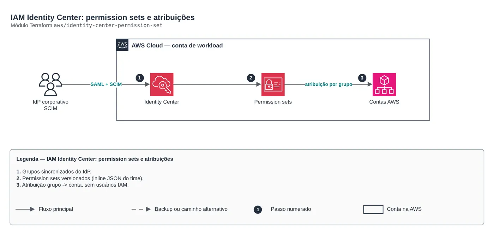
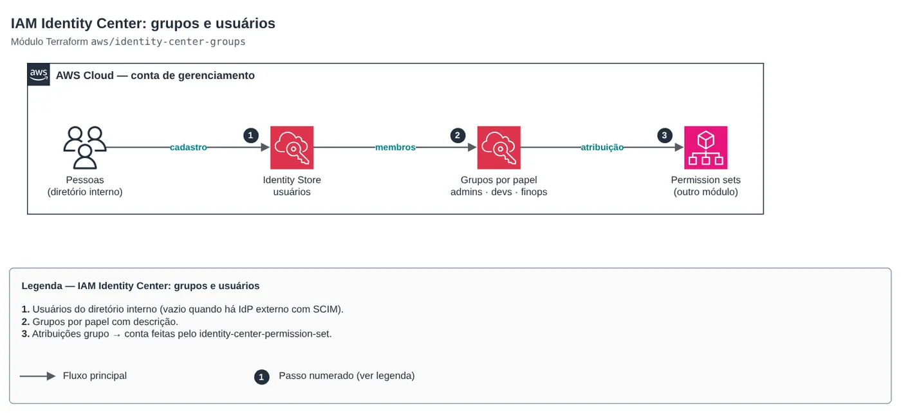

AWS · AWS na prática
IAM Identity Center como código: acesso sem usuário IAM
Grupos, permission sets e atribuições versionados em Terraform, com break-glass separado e pipelines por OIDC.

01O problema
O cenário típico: dezenas de contas, usuários IAM criados conta a conta, chaves de acesso antigas e ninguém sabendo quem acessa o quê. Auditoria vira planilha, e desligar alguém leva dias.
02A solução
Grupos no diretório do Identity Center (ou sincronizados do IdP corporativo), permission sets com políticas gerenciadas, inline, customer managed e permissions boundary, e atribuições grupo para conta, tudo em Terraform. Revisar acesso passa a ser revisar um pull request. Usuário IAM sobra só para break-glass e integrações legadas, e as pipelines assumem roles por OIDC, sem chave fixa.
Como montar
- Defina os grupos por função, não por pessoa: admins da plataforma, devs, somente leitura, FinOps.
- Crie os permission sets com o menor privilégio e duração de sessão curta para os de escrita.
- Atribua grupo para conta com base em OU e ambiente: escrita em dev, leitura em prd.
- Use delegated administrator para não operar o Identity Center a partir da conta de gerenciamento.
- Mantenha um grupo IAM de break-glass com MFA obrigatório, fora do Identity Center.
- Troque as chaves das pipelines por roles assumidas via OIDC, uma de plan e outra de deploy com aprovação.

O código
module "identity_center_permission_set" {
source = "git::https://github.com/Raphaelfcs/automacao_terraform.git//aws/identity-center-permission-set?ref=main"
permission_sets = {
RedeLeitura = { description = "Rede somente leitura", managed_policy_arns = ["arn:aws:iam::aws:policy/job-function/ViewOnlyAccess"], inline_policy = file("${path.module}/politicas/rede-leitura.json") }
Deploy = { description = "Deploy de aplicacoes", session_duration = "PT2H", managed_policy_arns = ["arn:aws:iam::aws:policy/PowerUserAccess"] }
}
account_assignments = [
{ permission_set = "RedeLeitura", group = "time-rede", account_id = "123456789012" },
{ permission_set = "Deploy", group = "time-apps", account_id = "123456789012" },
]
tags = local.tags
}03Discussão
Módulos Terraform usados:
aws/identity-center-groupsIAM Identity Center: grupos e usuáriosaws/identity-center-permission-setIAM Identity Center: permission sets e atribuiçõesaws/iam-groupGrupo IAM com MFA obrigatórioaws/iam-github-oidcGitHub Actions -> AWS por OIDC
FinOps: onde está o custo
| Componente | O que pesa | Alavanca |
|---|---|---|
aws/identity-center-permission-set | Nada: o Identity Center não cobra por usuário. | Menos tempo de operação com acessos e auditorias. |
aws/iam-github-oidc | Nada: OIDC não tem custo. | Elimina rotação de chaves e o risco de vazamento. |
Os valores variam com região e volume; a tabela mostra onde olhar primeiro.